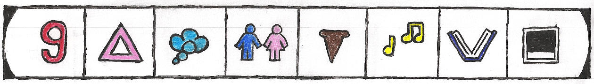

Today, I finally got my laptop back. The annoying times when the laptop would go into a coma turned out to be something that needed to be sent away to get fixed. I wasn't without it for that long, thankfully. I've been doing really well these last few weeks. My week of hell is somewhat of a distant memory. I have saved $600 so far towards the repair, and two weeks from now i'm going to send the check away so I will have no balance. YAH!
I'm getting excited about going back in the fall to UGA. Recently I got the South Parking deck, can you believe it! This means I am parking right next to my dorm next year, I'm such a spoiled brat. I can't wait for that first day back in the dorms when I'm going to be alittle more at home because I actually have some great friends in the area now. I will be moving in on August 14th, and I anxiously await that day.
I'm planning on a big update before going back to school. A complete change of theme, and it's going to be something non-garbage. That's good, right? I need to add a new section for pictures, and that means I will be needing a new icon...which I don't have...grrrrr. I'm going for a hand-written theme, actually. I'm thinking of scanning a high-quality piece of recycled paper and then drawing a really sharp navigation bar. Hopefully this will all come out how I plan...let's hope. Well, that's all for now...hope someone enjoys hearing from me....ADIOS!
Friday, July 12th
Saturday, July 13th
I'm in my pitch black room on my bed typing the last journal for the week...it's quite a site, I can assure you. I had a pretty so-so day, boring, and ultimately pointless. Why do I feel so lifeless and ordinary when I'm at home? Is it because my Dad is a prick and I should have left him rotting in California? Is it because I do nothing but work to pay off the repair costs on the Mazda? I don't understand, I am a young, good-looking guy, shouldn't I be out having fun and breaking hearts? Isn't it funny how what seems to be on the outside isn't quite what it is on the inside?
I sometimes wonder what I look like from the outside. I think sometimes I ignore what I really am because I'm scared...scared at what I've become. I think that maybe I can see what I am now, but I just refuse to accept it or assure myself that I'm going to change...next year...next year...this summer...this fall, sometime. Maybe, the sad depressing truth is, I won't change. I'm this for life. I'm just going to be bored and working forever and ever and never have anyone besides the strange people I come across on the internet that want to "bone" me. What is that supposed to do for me? Does it make me happy?
I certainly know what I want. I want, in less then a year, to spend less time in my dorm room and more time out in Athens. I want to have found someone that is so cool that I can spend time with him and just feel so charged and alive. I want to find someone that I can be sardonic with and he can just see right through that whole crap to the tense nervous kid beneath. I want college to be less about school and more about moving away from where I am sitting now...in my father's house. I want my life to be less ordinary. Is this what everyone else wants or have I just said something so profound, you just want to publish it immediatly!
I can answer that question. But how am I going to go about making the coming year what I really want and need it to be? I have several ideas, of course, that I must have to courage to go about making into reality. First of all I need to go out and meet more people...people like myself, not people I can be comfortable with. I am also going to try to busy myself with things outside of my little room. I am hoping to stick to a very aggressive training schedule at Ramsey. This will include running on Tuesdays and Thursdays and weight training on Monday/Wednesday/Friday. I also plan on going to alot of interesting talks around campus with the Honors program. I want to spend more time with Vicki too, I want her to be a bigger part of my college self because she represents a part of me that I really need to exude more often. Like Nicole, she makes me what to venture out and be more then what I settle on. I know having her in my life is a blessing. Of course, with all these things, I will be treating school with more respect and studying regularly. I am also hoping to spend more time with John to, going out to No Cover at Boneshakers, because interesting things ALWAYS happen then. I swear, I have only gone to No Cover a handful of times, and of those times, 3 of them I ended up dancing really close to someone, which for me, is a big thing.
A boyfriend would be nice next year, but that's one thing I can't control. Love life, that's something that's secondary to everything else. It's something, like a cat, that sleeps in your heart and comes beckoning when it's found something it likes. Your tummy rumbles, and you want THAT one, and once you have him, you can feel a bit of balance. A b/f would go a long way to helping fix alot of my most negative parts of me. I have alot of jealousy I think that I keep hidden. It's bad, but it's something everyone deals with and it's very personal and very wrong. I'm sorry!
Well, my MP3 is about to end and I have to wake up in about 4 hours to work my ass off all over again. I am hoping that maybe someone reads this update and is pleased to hear alittle of my late night soul-searching. Below I have inserted a picture of what my new navigation bar will look like in the update when I go back to UGA. Tell me what you think!
